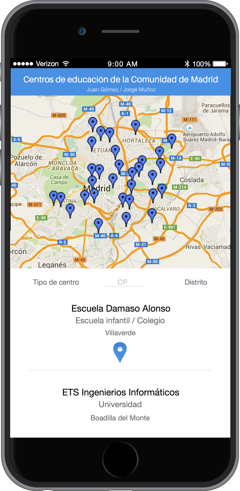

Mapa de centros educativos en la Comunidad de Madrid
Los requisitos de nuestra aplicación son:
Visualización de un mapa que muestre los diferentes centros de educación de la Comunidad de Madrid
Filtrar los datos de las diferentes escuelas infantiles, colegios públicos y universidades para mostrarlos en el mapa
Mostrar los detalles de los diferentes centros
Mockup:
